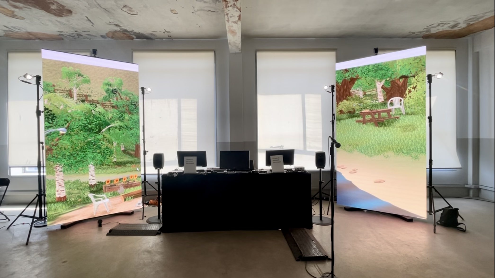

"Nowhere Actually Existing & Echoes" was presented in the Digital Arts Computing exhibition, Damned Soggy Oat Patch (2023) and The Beams, London.
Actually Nowhere Existing - Mary Tallontire
This is Nowhere Actually Existing, and at it's core, it is exactly that. It a digital worldbuilding piece illustrating a place that doesn't exist, and won't ever exist. It is a world that solely comes from my head and my imagination, embodying ideas of simulation being a presentation of a person's perception of reality, originally coming from game designer Doris C. Rusch. Furthermore, it depicts a idyllic, sustainable community, with animals running around freely and wildly, which come piece together to demonstrate a Utopia, and in particular, my utopia, as it is my perception of reality. The name in particular comes from the book The Village Against The World which discusses the village and enhabitants of Marinaleda in Spain who created a 'Utopia' and a foundation for a cooperative way of life. However, this world is only a simulation. However perfect it may present as, it has its may flaws and it calls on you to find them. This utopia isn't real, and will assure you you're aware of it.
Echoes - V e n A u r
In parallel with the visuals of the digital worldbuilding piece, "This is Nowhere Actually Existing," I crafted an accompanying audio landscape that harmoniously complemented the visual elements. The audio was created using Pure Data and consisted of layers of ambience. This was created using techniques such as the manipulation of noise and phasors. Drawing inspiration from the nature portrayed in the visuals, I crafted a composition that intertwines tranquility, excitement, and subtle elements wind. By integrating the auditory and visual elements, our collaborative aimed to transport the audience to a realm that blurs the boundaries between reality and imagination, inviting them to explore the simulated utopia.